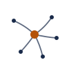

A new set of ten concepts created from scratch for Praxant. These directions avoid the earlier ant, node-network,
hexagon, orbital, bracket, and anvil motif family and focus instead on control, governance, locality, review, and runtime neutrality.
Primary ink: #16263F
Accent copper: #C56B2D
Transparent SVG backgrounds
All concepts shown on light and dark surfaces
01
Control Dial
Autonomy, but under deliberate control.
light surface
dark surface
Why
The dial says the product promise in one move: teams can turn autonomy up or down instead of accepting a fixed vendor-defined workflow.
Strong Points
Clear control metaphor.
Strong infrastructure tone.
Clean scaling behavior.
Weak Points
Somewhat operational in feel.
Dial imagery is familiar in systems software.
02
Hidden Ant Network
A network mark that is also, secretly, an ant.
mono · light
mono · dark
color · light
color · dark
Why
This is the most distinctive concept in the set because it hides the ant directly inside the network geometry. It ties the mark to the name without becoming a cartoon mascot.
Strong Points
Feels uniquely Praxant rather than generic orchestration software.
Rewards a second look without demanding explanation.
Can read as serious or community-friendly depending on context.
Weak Points
The name pun is invisible if the viewer does not know the etymology.
The concept is tightly coupled to the current brand name.
03
Council Convergence
Many voices. One synthesis.
mono · light
mono · dark

color · light
color · dark
Why
This expresses the review-council idea directly: multiple independent voices converging on one decision. It emphasizes synthesis and judgment rather than raw execution.
Strong Points
Highlights one of Praxant's most differentiated workflow ideas.
Centered composition feels calm and institutional.
Weak Points
Can read as hub-and-spoke rather than council unless explained.
Competes visually with generic platform-and-integrations diagrams.
04
Praxant Wordmark
Just the name. With one quiet detail.
mono · light
mono · dark
color · light
color · dark
Why
This is the conservative identity option: just the name, with a custom node detail inside the x. It avoids symbolism risk while still carrying a subtle brand-specific gesture.
Strong Points
Highly legible across contexts.
Minimal symbolic baggage, so the brand can evolve.
Works well in documentation headers and lockups.
Weak Points
Needs a separate symbol for favicon and avatar use.
Text rendering can vary by platform unless outlined.
05
Hex Colony
Seven cells. One queen.
mono · light
mono · dark
color · light
color · dark
Why
This uses a honeycomb structure to suggest a coordinated fleet of workers, with one emphasized cell acting as the supervisor or queen. It conveys scale and distributed organization.
Strong Points
Implies the system can grow beyond the visible cluster.
Asymmetric highlighted cell adds motion.
Useful for UI motifs and fleet visualizations.
Weak Points
Hexagons are heavily over-used in developer tooling.
The hierarchy depends more on color than some other concepts.
06
Ant Glyph
The ant, said out loud.
mono · light
mono · dark
color · light
color · dark
Why
This is the most explicit name-driven mark: an ant reduced to a clean glyph. It leans into labor, coordination, and practical action without requiring metaphor decoding.
Strong Points
Memorable and easy to describe.
Has personality without needing many elements.
Works well for community assets and larger brand moments.
Weak Points
The legs disappear at favicon scale.
Can drift toward mascot territory if used casually.
Some enterprise audiences may read it as less serious.
07
Orbital Agents
Parallelism, drawn as physics.
mono · light
mono · dark
color · light
color · dark
Why
This centers on scheduling and concurrency: a stable orchestrator with workers moving at different cadences around it. It reads as motion and parallel work more than static structure.
Strong Points
Parallelism is visible immediately.
It has natural animation potential for dashboards and hero sections.
Weak Points
Can read as atomic or physics-themed rather than software-specific.
The orbit trope is less ownable than the ant-based concepts.
08
Praxis P-Mark
The letter, with a pivot.
mono · light
mono · dark
color · light
color · dark
Why
This is the compact identity system piece: a geometric P with a pivot node. It is optimized for app icon, favicon, avatar, and other square contexts where the full wordmark is too long.
Strong Points
Best performer at very small sizes.
Feels stable, timeless, and easy to pair with the wordmark.
The node detail adds character without clutter.
Weak Points
Single-letter monograms are crowded territory.
It carries little of the multi-agent story on its own.
09
Forge Anvil
Praxant builds things. With heat.
mono · light
mono · dark
color · light
color · dark
Why
This leans into craft, making, and self-hosted infrastructure culture. The anvil metaphor positions Praxant as something built by and for people who want to forge their own workflow.
Strong Points
Strong cultural signal for the homelab and self-hosted audience.
Communicates craft more directly than any other concept.
Weak Points
Visually overlaps with Forgejo's territory.
It does not say agent orchestration very clearly.
Can skew hobbyist if overused as the primary identity.
10
Container Bracket
Three agents, in a sandbox.
mono · light
mono · dark
color · light
color · dark
Why
This tells the full technical story in one mark: supervised agents inside an isolation boundary. The brackets frame the containerization idea while the network explains what is being contained.
Strong Points
Explains agents, supervision, and sandboxing in one symbol.
Rectangular silhouette helps it fit product and architecture surfaces.
Weak Points
Bracket shapes can read as generic code syntax.
The composition is busier than the simpler concepts.
The container reading is not obvious without context.
02
Signal Weave
Different runtimes, one woven workflow.
light surface
dark surface
Why
Praxant composes multiple providers and runtimes into a single supervised process. The weave emphasizes structure made from independent strands.
Strong Points
Dynamic and layered.
Avoids generic network diagrams.
Good motion potential.
Weak Points
More abstract at first glance.
Can feel middleware-like if unsupported by messaging.
03
Policy Gate
Permission, thresholds, and supervised passage.
light surface
dark surface
Why
Praxant is not just agent execution. It is gated execution with rules, approvals, and escalation. This concept centers that control surface.
Strong Points
Serious and enterprise-friendly.
Explains approval logic clearly.
Pairs well with trust messaging.
Weak Points
More conservative than bolder concepts.
Less expressive of runtime neutrality.
04
Runtime Ribbon
Many execution paths, one orchestration layer.
light surface
dark surface
Why
The converging ribbons express the runtime-neutral product strategy directly: different agent engines are brought into one governed stream.
Strong Points
Strong multi-runtime story.
Fluid without being trendy.
Excellent for motion design.
Weak Points
Needs explanation to land fast.
Less specific to local-first control.
05
Local Beacon
A local operating center, not a remote black box.
light surface
dark surface
Why
This concept emphasizes that Praxant runs where the team chooses. The beacon signals a locally owned command point rather than outsourced orchestration.
Strong Points
Clear local-first metaphor.
Memorable silhouette.
Good fit for self-hosted positioning.
Weak Points
Can lean toward observability or networking.
Less direct about orchestration policy.
06
Relay Stack
Layered systems, supervised progression.
light surface
dark surface
Why
Praxant coordinates work through layers: runtime, control, review, and merge. The stacked form shows that structure without using typical cloud or node cliches.
Strong Points
Strong infrastructure character.
Good fit for docs and UI.
Adaptable shape language.
Weak Points
Less emotionally distinctive.
Could be read as generic platform software.
07
Sovereign Window
Visible, bounded, inspectable execution.
light surface
dark surface
Why
The platform promise is that nothing important happens in the dark. This concept frames agent work as something supervised and visible through a stable boundary.
Strong Points
Strong transparency metaphor.
Calm and serious presence.
Simple, usable geometry.
Weak Points
Less dynamic visually.
Needs messaging support to feel unique.
08
Merge Fork
Many possible paths, one reviewed path forward.
light surface
dark surface
Why
Autonomous coding creates branches of possibility. Praxant's job is to guide them into one governed route through review, policy, and merge workflow.
Strong Points
Directional and compact.
Good convergence story.
Strong movement in the silhouette.
Weak Points
Can read as version-control-specific.
Narrower positioning story than broader concepts.
09
Review Lens
Automation that remains readable and inspectable.
light surface
dark surface
Why
Praxant is not meant to hide code generation. The lens metaphor emphasizes reviewability, understanding, and policy-backed scrutiny before progression.
Strong Points
Best review-and-visibility metaphor in the set.
Approachable but still serious.
Distinctive on product and docs surfaces.
Weak Points
Can underplay automation power.
Lens imagery can skew analytical rather than operational.
10
Command Knot
Runtimes, policy, and workflow tied into one system.
light surface
dark surface
Why
This is the most identity-led concept. It treats orchestration as the act of tying multiple powerful forces into one durable and controlled whole.